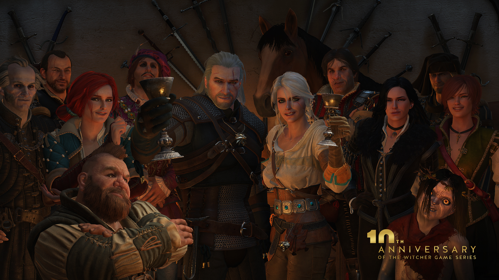
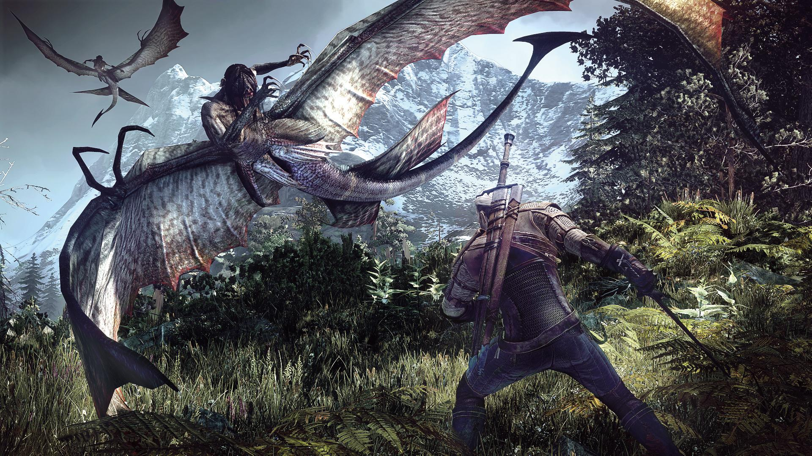
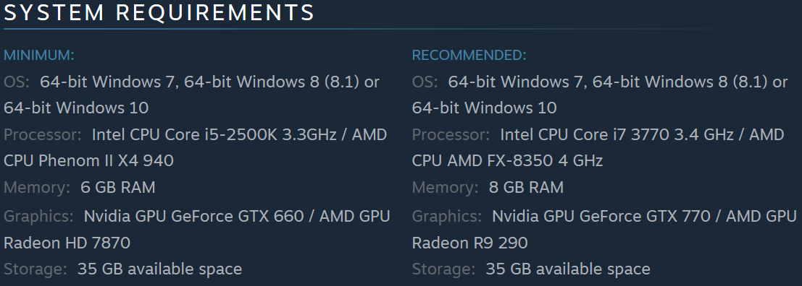
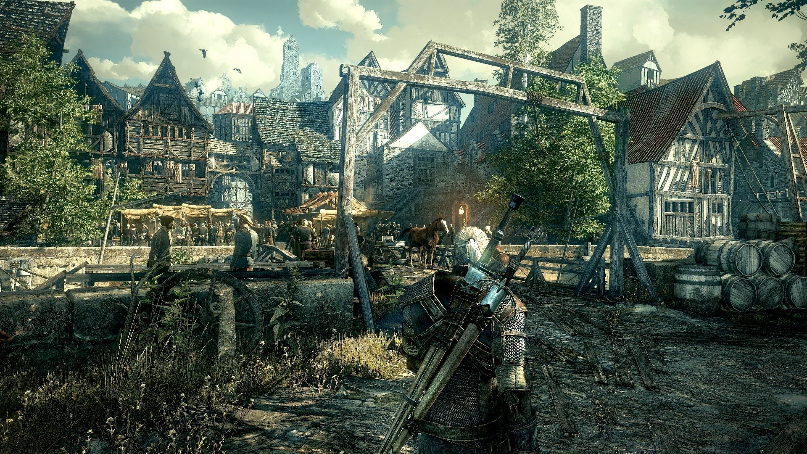

THE WITCHER 3: WILD HUNT
REVIEW
Posted by Guan Quan, 27 March 2018
The Witcher 3: Wild Hunt is the improved version of the highly-raved The Witcher 2: Assassins of Kings. The predecessor had already set the benchmark, so much that the Polish Prime Minister gave President Obama a copy. It certainly surpasses the expectation set by The Elder Scrolls 5: Skyrim along with the complex diverging storytelling of Dragon Age: Inquisition. The game was developed by a Polish game studio CD PROJEKT RED, and the game starts off in the medieval Eastern European area with a fair dosage of mythical creatures roaming the world known as “The Continent”.
While spending a week with The Witcher 3, I was consistently amazed by its immersive quests, challenging combats, and highly detailed environment in a stunning and expansive open world. It seems as if every single object within the game has a close and delicate touch.
Storylines have always been one of the Witcher’s forte, and it certainly lives up its fame in the third installment. The story is closely intertwined with the books written by a Polish fantasy author Andrezej Sapkowski, as the protagonist Geralt of Rivia seeks to reunite with two woman that has been lost to him for years. One is his lover, Yennefer, and another is his ward, Ciri, where the latter is chased by the underworld leader and the antagonist Wild Hunt.
 Geralt's Closest TiesEven though the franchise has had a long history, The Witcher 3 still does a splendid job of introducing new players to the series. Throughout the story, the players are given a recap on the backstories from past sequels, and the players are introduced to Geralt’s closest relationships immediately (Yes, Geralt has friends). There are also moments where players can confirm key decisions made in the previous game, such that you can see the reflected changes even without saved files from The Witcher 2.
The size of The Witcher 3 is indeed colossal. The Continent spans over four main areas including White Orchard, Velen "&" Novigrad, Skellige Isles, and Kaer Morhen. With the Blood and Wine’s DLC, it included an additional area Toussaint. The Witcher 3 is at least 3.7 times the size of Grand Theft Auto: San Andreas (36km2), 3.5 times bigger than Skyrim (39km2), around 3 times the size of Red Dead Redemption (41km2) and Far Cry 4 (46km2), and 1.5 times bigger than the recent open world marvel Grand Theft Auto V (81km2).
With such a massive open world, the mythical creatures that roam the land consist of a wide spectrum. The game developers researched heavily into the Eastern and Northern Europe folklore and in the Roman and Greek mythology. We are definitely familiar with vampires, dragons, and possibly the lesser known such as Wyverns. What about even lesser known creatures? In the game, a list of creatures that Geralt encountered during the gameplay are documented, and further information is also supplemented for the player’s reference. Personally, I have learned a lot about the different folklores that spanned across the continent of Europe.
Some of the lesser known creatures include Leshen (or “leshy”) from the Slavic folklore that lives in dense forest; Succubus from the Roman and Greek mythology that seduces men; and Botchlings from the Scandinavian folklore where these unbaptized infants are being discarded by their parents and left in the woods. Even the main antagonist Wild Hunt has its roots in Germany.
 A Siren from Greek mythology wreaking havocWhile a good proportion of time is spent on the progression through its compelling storyline, the remaining bulk of time would be for Geralt to trudge through swarms of monsters lurking behind every corner. It follows the classical recipe of every role-playing game (RPG) – slaying monsters for Geralt to level up while upgrading him with gained points. The basic arsenal available to the Witcher at the start are a steel sword and a silver sword, where the latter is used to slay magical creatures.
 Just another walk in the park, where slice and dice has never been easier
Just another walk in the park, where slice and dice has never been easier
The combat system is very fluid and intuitive due to the similarity of control placement with other RPG games. Attacks are chained through a mixture of light and heavy slashes, and they can be executed seamlessly. When Geralt receives an incoming attack, the player can choose to perform either a roll or parry. Although it sounds simple, the combat is more focused towards the perfection of timing and positioning yourself advantageously for an aggressive offense.
My favourite fights were with the mini-bosses such as the first encounter with leshys. At lower difficulty levels such as the default “normal” setting, these bosses were particularly easy. At higher levels of difficulties, Geralt is seemingly under-levelled for most creatures, and this poses a challenge for most players. The typical brute force strategies will not work in these scenarios. Cautious planning and exploiting the boss’ artificial intelligence is paramount to winning. These fights can be long drawn since Geralt can only slowly chip off their health due to his weaker equipment.
Aside from the offensive and defensive abilities that Geralt possesses, he can also cast signs. These are a low-level type of Witcher magic where he can choose to blast a telekinetic wave, place a magic trap, set foes aflame, conjure a protective shield for himself, or to exploit the creature’s mind and make them turn against each other. Using the enemies’ weakness to your advantage is key. Some enemies are susceptible to fire damages while others are prone to the various types of oil smeared on your blades.
 We gonna let it burn burn burn
We gonna let it burn burn burn
In the books, Geralt is also an expert in crafting bombs and this carries forward into the game. Bombs can also be upgraded by possessing the correct ingredients required. These bombs are effective when Geralt is flanked by a swarm of creatures and it helps by providing crowd control. Crossbows are also available to Geralt’s disposal. These skills and weaponry can be mixed and matched. You can choose to craft and detonate a bomb, and that releases gas into nearby areas. The gas can then be ignited through either the flame sign or through an explosive bolt via the crossbow. The combinations are endless.
 If your archery skills are bad, why not just freeze them with a Northern Wind Bomb?
If your archery skills are bad, why not just freeze them with a Northern Wind Bomb?
Prior to engaging with the enemy, Geralt can also look them up from a list of creatures that he has encountered before and note down their weaknesses. It is crucial for Geralt to know what he is up against, so that he can brew the appropriate potions, apply the oil required to his best blades, and prepare the bombs in advance. You can’t switch his loadout during combat, and that constraint forces the players to think ahead.
But before you commit to shelling out on this superb game, you should check if your system is able to handle the intensive requirement.
The game is available on three main platforms including Xbox One, PlayStation 4, and on Windows. The specifications to run the game are unsurprisingly demanding - thanks to the rendering of its surreal environments - where powerful graphics card and processor are required. Even though it can be played with the minimum requirements, the game’s highly detailed environments truly shines in the ultra-setting.
The visuals are purely astonishing. The game’s landscape are both impressive and atmospheric through the use of natural vegetation, lighting, shadows, fog, and weather. The scenery captivates one to veer off the tracks and to explore. The difference arises when Geralt visits the vast variety of environment which consists of snowy mountains, deep and lush forests, and the expansive tundra (just to name a few). The up-close details such as texturing and character model are also equally intricate. At some point, you would take a breather and marvel at the level of sophistication the game delivers.
 The stunning graphics of The Witcher 3 on ultra setting at 60fpsThe game comes in two editions on steam, the normal edition and the Game of the Year edition. The normal edition costs about SGD50. The latter comes with two huge expansion packs which include “Hearts of Stones” and “Blood and Wine”. The purchase of the Game of the Year edition is highly recommended as the first expansion has an approximate additional 10 hours of gameplay while the second clocks around 20 hours. For an additional SGD13, it is certainly worth every penny as it offers a minimum of 30 hours of solid gameplay.
CONCLUDING THOUGHTS
The Witcher 3 has once again outdone its predecessor and it certainly lives up to the hype that it receives. The success continues even with the release of the other two remaining expansion packs, where CD PROJEKT RED was nominated and awarded with several other awards. The Witcher is a truly immersive experience. It manages to consistently break past the peripherals of technology in video gaming while being able to provide a stellar open world culture. This is definitely one of the best role-playing games that I have ever played, if not the best, and it sets the new gold standard going forward. With a sleek combat system and lush landscape, it is a truly inspiring game.